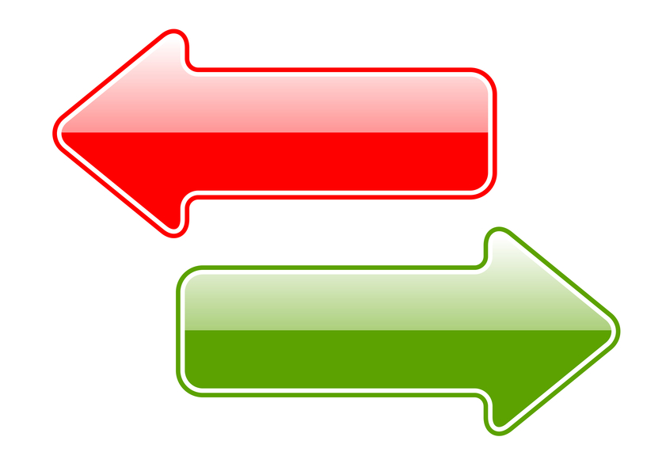

Sikered legfontosabb tényezője,
hogy miként gondolkodsz.
A sikertelen ember
a nagy dobásra készül
áldozatnak érzi magát
bízik a szerencsében
biztonságra törekszik
dicsekvő
ellenzi a változást
emberekről beszél
haragot tart
hiszi ha látja
kerüli a csalódást
kritizál
lottózik
már eleget tud
mások kudarcára épít
másokat okol a hibákért
őrzi az információt
panaszkodik
tévét néz
türelmetlen
vitatja mások eredményeit
venni akar valamit

A sikeres ember
kis lépésekkel halad
felelősséget érez
célokat tűz ki
kockáztat
szerény
szereti a változást
ötletekről beszél
megbocsát
hiszi és megcsinálja
keresi a kihívást
dicsér
cselekszik
folyamatosan tanul
mások sikerének is örül
tanul a hibáiból
megosztja az információt
örömöt áraszt
minden nap olvas
hálás
elismeri mások győzelmét
lenni akar valaki